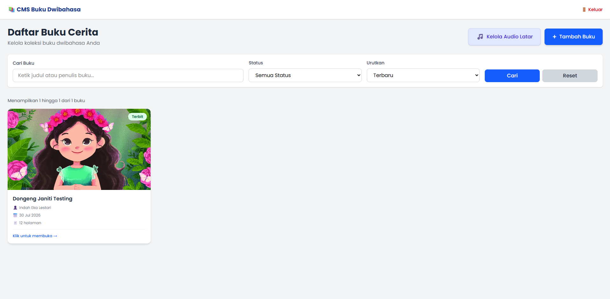

Proyek Akademik
Content Management System (CMS) Kado Ceria
Jan 2026 – Agu 2026
Masalah: konten flipbook Kado Ceria tertanam di kode, sehingga setiap pembaruan perlu ubah kode dan deploy ulang. CMS ini memungkinkan Balai Bahasa memperbarui konten sendiri.
Peran: Project Lead, System Analyst & Technical Writer, Backend Developer, QA
Teknologi: Laravel, PHP, Blade, PostgreSQL, AWS (EC2, S3, RDS, SQS), Git
- Memimpin tim; menyusun 34 kebutuhan fungsional dan 10 non-fungsional serta rancangan sistem (sequence, class, dan deployment diagram, serta model data).
- Memperbaiki bug fitur audio, konversi buku, dan CRUD buku, serta me-refactor logika audio latar.
- Menyusun 44 test case UAT; pengujian integrasi, black-box, dan validasi lulus 100%, uji NFR pasca-deployment 80%.
Status: Proyek tugas akhir tim, ditujukan untuk Balai Bahasa. Sudah di-deploy ke AWS, belum dipakai secara operasional.